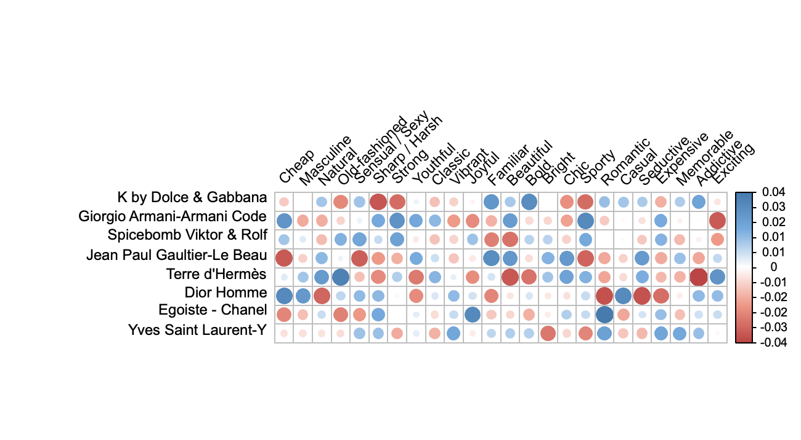
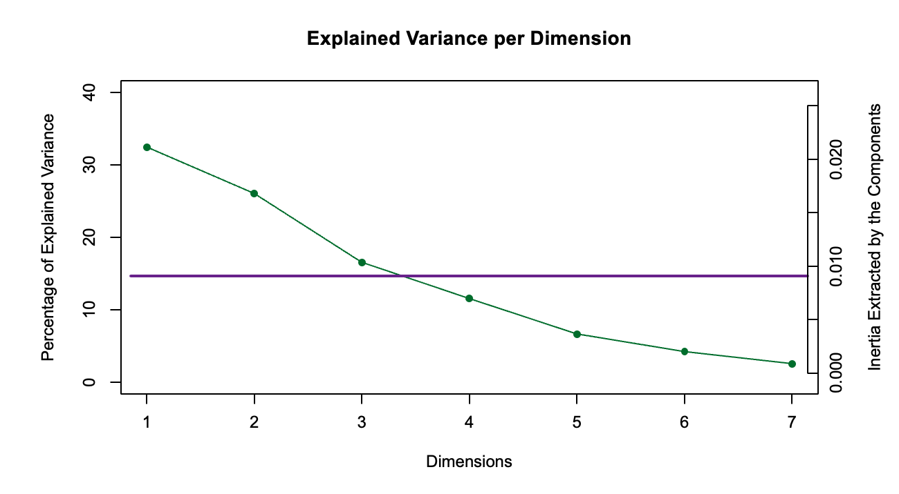
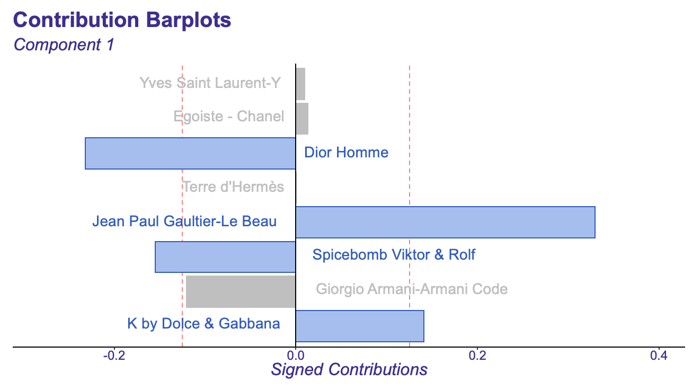
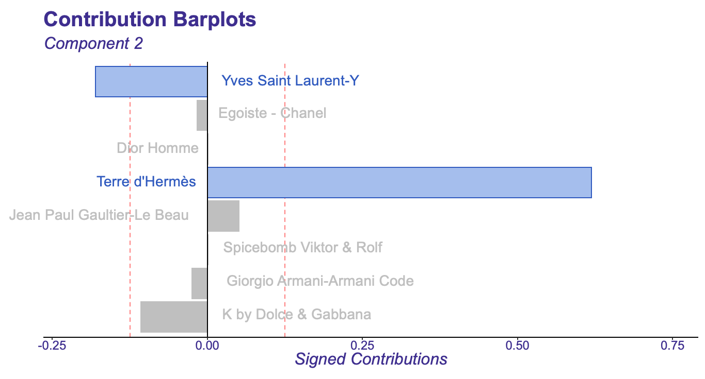
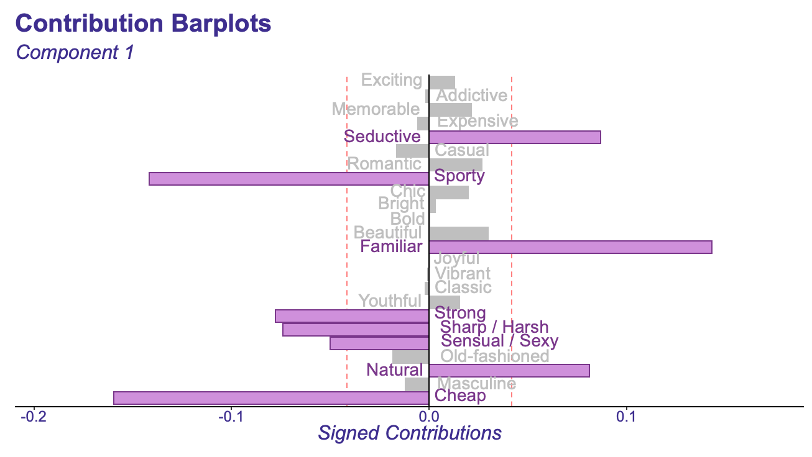
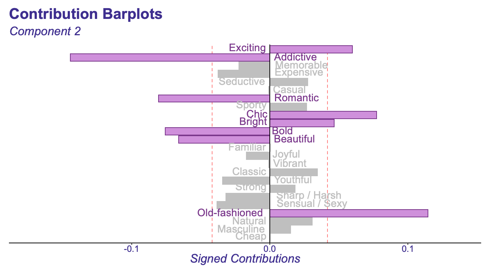

7 Interpretation of the data for Both sets
In our interpretation, we will be looking at symmetric and asymmetric results. For both the results , they have similarities in the data that we are using for it so we will take a look at those similarities first in isolation.
7.1 Chi Squared Residuals
Now that we have taken a look at the data we can look at our the first thing:
Chi Squared Residuals which is going to tell us which cells contribute most to our Chi square test. Cells with the highest absolute pearson residuals will tell us which one of them is contributing most.

7.2 The Eigenvalues Scree plot
Next, we will want to take a look at the eigenvalues scree plot. In this plot, we want to look at the dimensions above the kaiser line. There are three variables about the kaiser line, so we will want to keep those three variables. One thing to note here is that there is no steep decline, and the elbow test would not work in this case.

7.3 Contribution Bar plots
7.3.1 Contribution bar plot Rows:
7.3.1.1 Component 1:
Here we will want to see which of the rows will contribute most to our components. Looks like 4/8 of the perfume brands contribute to component one with the largest contribution being from Spicebomb Viktor and Rolf

7.3.1.2 Component 2:
Below for component 2 we have two perfumes that contribute the most with Terre d’Hermes beings the largest contributor by about three times as much as the next significant contributer Yves saint Laurent-Y by far coming in at .61.

7.3.2 Contribution bar plot Columns:
7.3.2.1 Component 1

Cheap, sporty and Familiar seem to be our top 3 contributors here.
7.3.2.2 Component 2:

Next we will take a side by side look at our asymmetric vs symmetric results side by side.